La usabilidad web se refiere a lo fácil que resulta para los usuarios navegar por un sitio y realizar las acciones que necesitan sin complicaciones ni frustraciones. Este concepto incluye una navegación sencilla, un diseño centrado en el usuario, una estructura visual clara y una buena accesibilidad.
En otras palabras, una página con buena usabilidad permite que cualquier persona, sin importar su nivel de experiencia o conocimiento técnico, pueda utilizarla sin problemas y alcanzar sus objetivos de manera efectiva.
Importancia de la usabilidad web
La usabilidad web es un factor clave para el éxito de cualquier sitio. Cuando los usuarios se enfrentan a una página confusa o difícil de navegar, es muy probable que la abandonen rápidamente y busquen otras opciones. En cambio, si el sitio es fácil de usar, los visitantes permanecerán más tiempo, explorarán más contenido y aumentará la probabilidad de que realicen acciones importantes, como comprar un producto, llenar un formulario o suscribirse a un boletín.
Beneficios
Una buena usabilidad web aporta múltiples ventajas tanto para los usuarios como para los propietarios del sitio. Algunos de los beneficios más destacados son:
- Mejora la experiencia del usuario:
- Aumenta la tasa de conversión:
- Mejora el posicionamiento en los motores de búsqueda:
- Reduce los costos de atención al cliente:
Un sitio usable ofrece una experiencia positiva y satisfactoria, lo que genera confianza en la marca y fomenta la fidelidad de los visitantes.
Cuando los usuarios encuentran fácilmente lo que buscan y pueden completar sus acciones sin dificultades, es más probable que realicen una compra, se suscriban o se pongan en contacto.
Los buscadores valoran la usabilidad como un factor importante para determinar la calidad y relevancia de un sitio web. Un diseño claro y funcional ayuda a lograr mejores posiciones en las SERP.
Un sitio fácil de usar disminuye la necesidad de soporte, ya que los usuarios pueden encontrar por sí mismos la información que necesitan.
Principios de Usabilidad de Jakob Nielsen
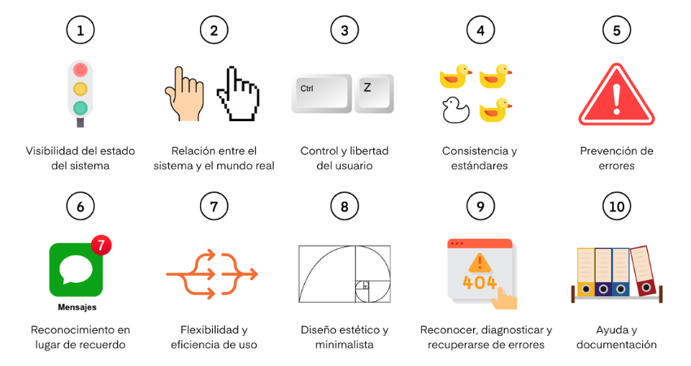Jakob Nielsen, una de las personas más respetadas en el campo de la usabilidad web, propuso diez principios fundamentales para diseñar interfaces que sean fáciles de usar y comprender. Estos principios son ampliamente reconocidos y aplicados en el campo del diseño web:
- Visibilidad del estado del sistema
- Consistencia entre el sistema y el mundo real
- Control del usuario y libertad
- Consistencia y estándares
- Prevención de errores
- Reconocimiento en lugar de recuerdo
- Flexibilidad y eficiencia de uso
- Estética y diseño minimalista
- Ayuda a los usuarios a reconocer, diagnosticar y recuperarse de errores
- Documentación de ayuda
El sistema debe mantener informado al usuario sobre lo que esta ocurriendo en la web a cada momento.
Esto se puede lograr mediante mensajes claros, indicadores de carga y actualizaciones en tiempo real. Así se evita dejar a los usuarios pensando: ¿Qué esta pasando ahora?
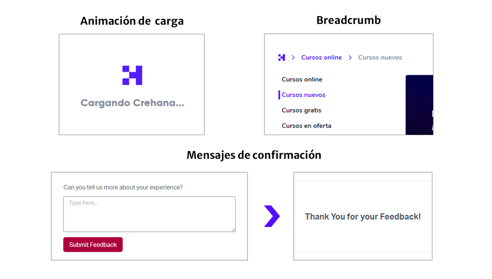
 Ejemplo de una mala práctica de la visibilidad del estado del sistema:
Ejemplo de una mala práctica de la visibilidad del estado del sistema:

El sistema tiene que hablar el idioma del usuario. Se debe utilizar palabras, frases y conceptos que le sean familiares.
Esto se puede lograr explicando un error que ocurra en un lenguaje que el usuario entienda en vez de solo mostrar el código de error.
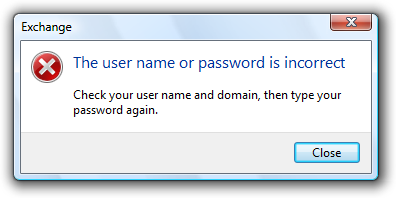
Ejemplo de una mala práctica de la consistencia entre el sistema y el mundo real: No explicar correctamente los errores que se presenten en el sistema.

Los usuarios suelen realizar acciones por error. Siempre debe existir una «salida de emergencia» para revertir una acción no deseada.
Esto se puede lograr mediante un botón de "deshacer" o "rehacer" que permita a los usuarios revertir cambios fácilmente.
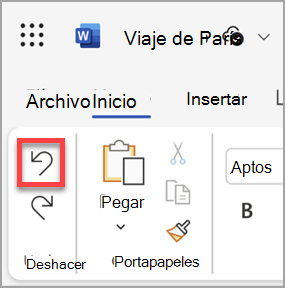
Ejemplo de una mala práctica del control del usuario y libertad:
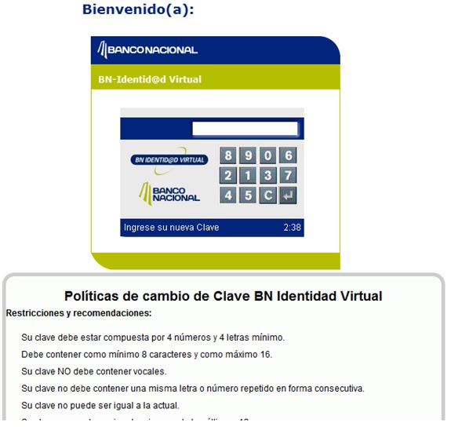
Los usuarios no deben verse obligados si diferentes palabras, situaciones o acciones significan lo mismo. Se debe seguir las convenciones establecidas en la plataforma y la industria.
Esto se puede lograr mediante el uso de terminología y símbolos consistentes en toda la interfaz de usuario.
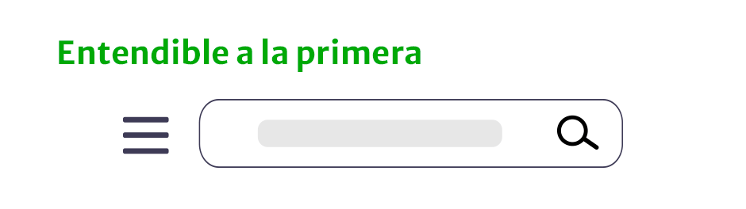
Ejemplo de una mala práctica de la consistencia y estándares:
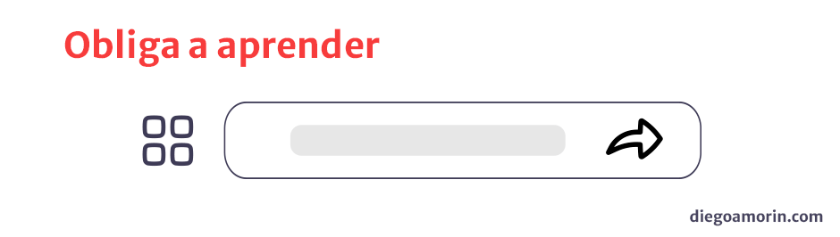
Los buenos mensajes de error son importantes. Pero mejor aún, es crear un diseño que evite que los errores ocurran.
Esto se puede lograr mediante la validación de datos en tiempo real, la desactivación de botones hasta que se completen los campos requeridos y la implementación de sugerencias contextuales.
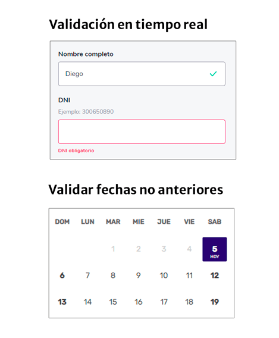
Ejemplo de una mala práctica de la visibilidad de la prevención de errores:
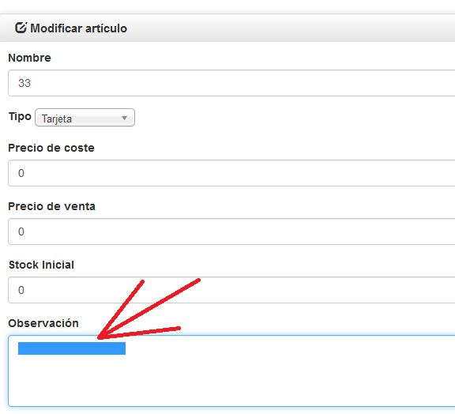
Minimizar el uso de memoria del usuario haciendo visibles los elementos, las acciones y las opciones.
Esto se puede lograr mediante menús desplegables, etiquetas claras y una navegación intuitiva.
 Ejemplo de una mala práctica del reconocimiento en lugar de recuerdo:
Ejemplo de una mala práctica del reconocimiento en lugar de recuerdo:
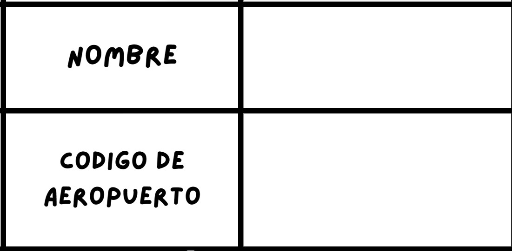
Los usuarios más experimentados, deben poseer atajos y aceleradores para poder realizar sus operaciones mas habituales. De esta forma, tiene alternativas para personalizar sus acciones frecuentes.
Esto se puede lograr mediante la implementación de atajos de teclado, menús contextuales y opciones de personalización en la interfaz.
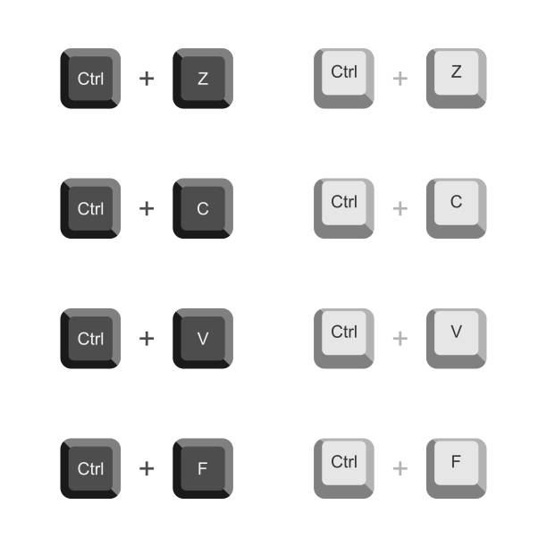
Ejemplo de una mala práctica de la flexibilidad y eficiencia de uso:
Las interfaces no deben contener información irrelevante o que rara vez se necesite. Se debe conocer que tipo de contenido necesita el usuario.
Esto se puede lograr mediante la eliminación de elementos innecesarios, el uso de un diseño limpio y la organización lógica de la información.
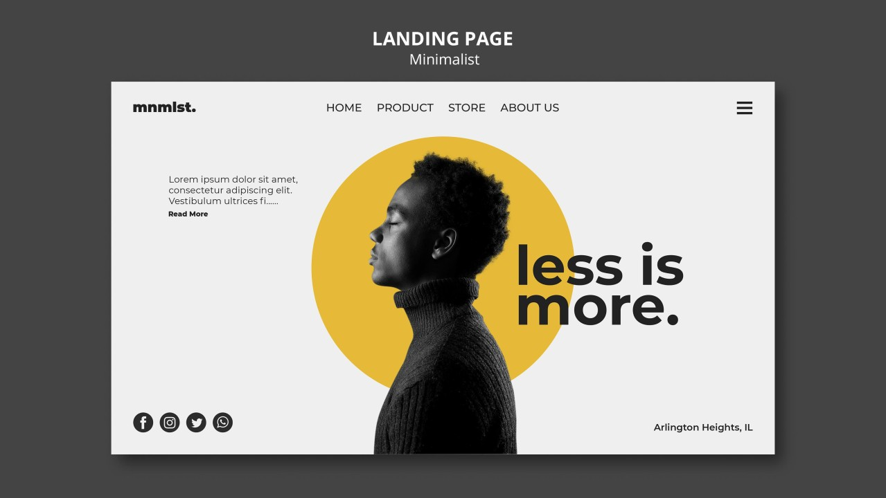
Ejemplo de una mala práctica de la visibilidad del estado del sistema:
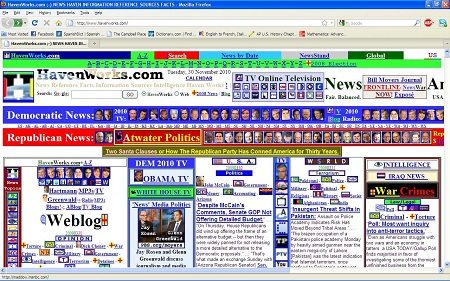
Los mensajes de error deben expresarse en un lenguaje entendible, sin códigos de error. Se debe describir con precisión el problema y sugerir constructivamente una solución.
Esto se puede lograr mediante la implementación de mensajes de error claros y concisos, así como proporcionando sugerencias útiles para la resolución de problemas.
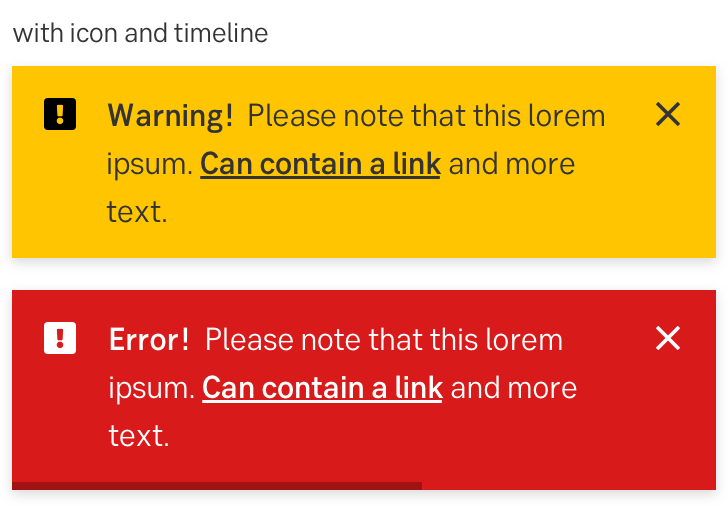
Ejemplo de una mala práctica de ayuda a los usuarios a reconocer, diagnosticar y recuperarse de errores:
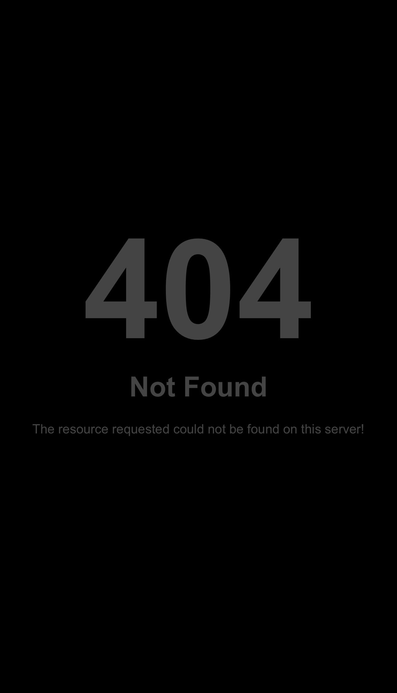
Lo ideal es que un sistema no necesite ninguna explicación adicional. Pero en algunos casos, se debe proporcionar una documentación para ayudar a los usuarios a entender cómo completar sus tareas.
Esto se puede lograr mediante la creación de guías de usuario, tutoriales y preguntas frecuentes (FAQ) que aborden las necesidades y problemas comunes de los usuarios.
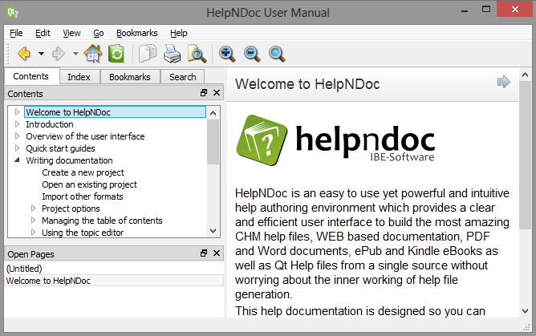
Ejemplo de una mala práctica de la documentación de ayuda:
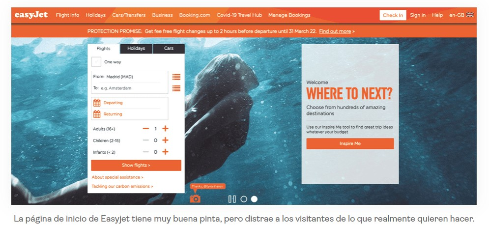
Diseño Centrado en el Usuario
El diseño centrado en el usuario (DCU) conocido como "un proceso de diseño iterativo en el que los diseñadores se centran en las necesidades de los usuarios dentro del proceso de diseño de un producto o servicio".
El propósito del diseño centrado en el usuario (DCU) es integrar la información y las opiniones de las personas que usarán el producto en cada etapa del desarrollo. De esta manera, se asegura que las decisiones de diseño se fundamenten realmente en lo que los usuarios necesitan y esperan.
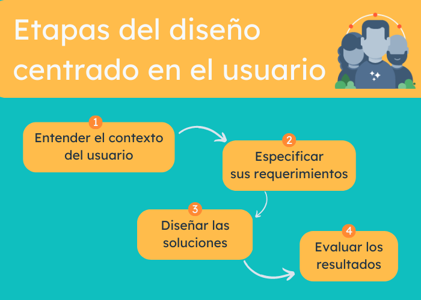En muchos casos, los procesos de diseño y desarrollo no se enfocan realmente en el usuario. Con frecuencia, las pruebas de usabilidad se llevan a cabo al final del proyecto, cuando ya resulta demasiado tarde para realizar ajustes significativos o introducir mejoras importantes. Esto provoca que las organizaciones terminen construyendo productos basados en sus propias decisiones internas, en lugar de hacerlo según las verdaderas necesidades de las personas. Como consecuencia, los usuarios deben adaptarse y aprender a usar algo que quizá no les resulte intuitivo ni les brinde una buena experiencia. Por eso, es fundamental planificar cuidadosamente cuándo y cómo se llevará a cabo la investigación de usuarios a lo largo de todo el proceso de diseño, desde la fase inicial de ideación hasta la creación y mejora del producto final. En realidad, un producto puede considerarse siempre en evolución, ya que la retroalimentación constante de los usuarios permite perfeccionarlo y hacerlo más relevante con el tiempo. En este sentido, el diseño centrado en el usuario (DCU) actúa como un marco de trabajo que busca comprender, definir y evaluar los productos en función de las necesidades reales de quienes los utilizan. Los métodos de experiencia de usuario (UX) se integran dentro de este marco y lo fortalecen, garantizando que las decisiones de diseño se basen en datos y observaciones concretas. Sin embargo, aplicar este enfoque puede ser un proceso complejo que requiere compromiso, investigación continua y una mentalidad abierta a la mejora constante.
Guía de Diseño Centrado en el Usuario (DCU)
Microsoft nos ofrece esta guía de Recomendaciones para una estrategia de diseño centrada en el usuario, la cual presenta una serie de recomendaciones y buenas prácticas para aplicar el diseño centrado en el usuario (DCU), con el objetivo de garantizar que las cargas de trabajo sean útiles, usables y atractivas para las personas, al mismo tiempo que se cumplen los objetivos y requisitos empresariales. El DCU es un enfoque que se basa en comprender profundamente las necesidades, preferencias y contextos de los usuarios que interactúan con un producto o sistema. Adoptar este enfoque permite prevenir problemas de usabilidad, frustración o insatisfacción, y también contribuye a reducir los costos y riesgos asociados con rediseños o fallas de diseño.
Estrategias Clave de Diseño
Poner a los usuarios en el centro del proceso de diseño y desarrollo es fundamental para ofrecer experiencias óptimas. Esto implica comprender qué necesitan, esperan y valoran, así como realizar investigaciones que se traduzcan en artefactos de diseño útiles para la planificación, comunicación y validación con los usuarios y las partes interesadas. El diseño centrado en el usuario es un proceso iterativo que promueve la mejora continua mediante pruebas, aprendizaje y adaptación constante.
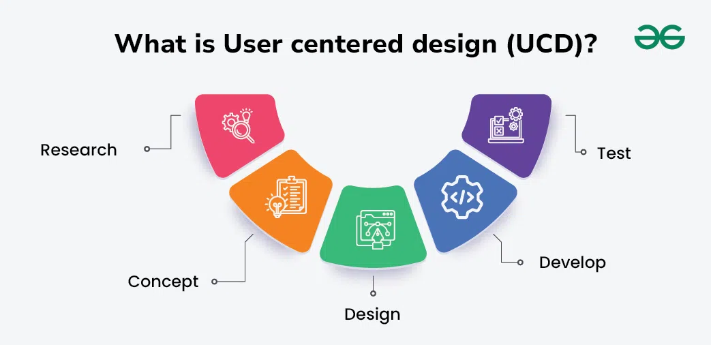Involucrar a los Usuarios Durante Todo el Ciclo de Vida
Los equipos deben investigar, observar y colaborar con las personas para diseñar soluciones que respondan a sus verdaderas necesidades. Esto puede lograrse mediante las siguientes estrategias:
- Investigación temprana: Realice investigaciones en las primeras etapas del ciclo de desarrollo para identificar problemas, oportunidades y requisitos de los usuarios.
- Cocreación: Invite a los usuarios a participar en sesiones de ideación, talleres o sprints de diseño, fomentando su participación activa y sus aportes.
- Prototipado y pruebas: Cree prototipos de baja o alta fidelidad y pruébelos con usuarios para validar hipótesis y decisiones de diseño.
- Lanzamiento e iteración: Lance versiones mínimas viables (MVP) o betas, recopile comentarios y datos de uso, y realice mejoras basadas en resultados reales.
Realizar Investigaciones de Usuarios y Compartir la Información
La investigación de usuarios es esencial para comprender sus necesidades, preferencias y comportamientos, y así fundamentar decisiones de diseño efectivas. Siga estos pasos para llevarla a cabo:
- Definir objetivos: Asegúrese de que los objetivos de la investigación estén alineados con los del proyecto y las expectativas de los usuarios y partes interesadas.
- Seleccionar métodos: Combine métodos cualitativos y cuantitativos (entrevistas, encuestas, observaciones, pruebas de usabilidad, etc.) según los recursos disponibles.
- Realizar la investigación: Involucre a participantes diversos y recopile datos de forma imparcial para obtener resultados representativos.
- Analizar los resultados: Identifique patrones, temas e ideas mediante técnicas de análisis como la codificación temática o los mapas de afinidad.
- Comunicar hallazgos: Documente y comparta los resultados con los equipos y las partes interesadas para apoyar decisiones basadas en evidencia.
Empatizar con los Usuarios y sus Contextos
Empatizar con los usuarios ayuda a los equipos a comprender sus necesidades, expectativas y motivaciones, permitiendo diseñar experiencias relevantes y significativas. También ayuda a evitar sesgos y a descubrir oportunidades que podrían pasarse por alto.
- Perfiles de usuario: Cree personas basadas en datos reales que reflejen la diversidad y complejidad de los usuarios.
- Escenarios: Describa situaciones o tareas reales que los usuarios enfrentan, mostrando sus objetivos, acciones y emociones.
- Mapas de recorrido: Visualice la experiencia completa de los usuarios a lo largo de los diferentes puntos de contacto y fases del uso del producto.
Empatizar no solo mejora el diseño, sino que también fortalece la relación y la confianza entre los equipos y los usuarios.
Fomentar la Mejora Continua
Una cultura de mejora continua impulsa la calidad y la innovación. Solicite retroalimentación constante, realice evaluaciones periódicas e incorpore las lecciones aprendidas en nuevos proyectos. Manténgase actualizado con las últimas tendencias en diseño UX y herramientas como Fluent UI para garantizar que sus soluciones sigan siendo relevantes.
- Iterar y probar: Observe y mida el comportamiento, las reacciones y la satisfacción del usuario con prototipos y pruebas de usabilidad.
- Analizar resultados: Identifique patrones y tendencias, comparando los resultados con los objetivos iniciales para detectar áreas de mejora.
- Implementar y comunicar mejoras: Aplique los cambios necesarios y comparta los resultados con los equipos y las partes interesadas.
Facilitación en Power Platform
Si su carga de trabajo incluye un agente, puede analizar el rendimiento y uso en Copilot Studio. Los análisis de Copilot proporcionan una visión completa del desempeño del agente mediante el uso de inteligencia artificial para detectar temas con mayor impacto en métricas como la tasa de escalación, abandono y resolución. Hacer un seguimiento de estas métricas permite mejorar continuamente la eficacia del agente y la calidad general de la experiencia del usuario.